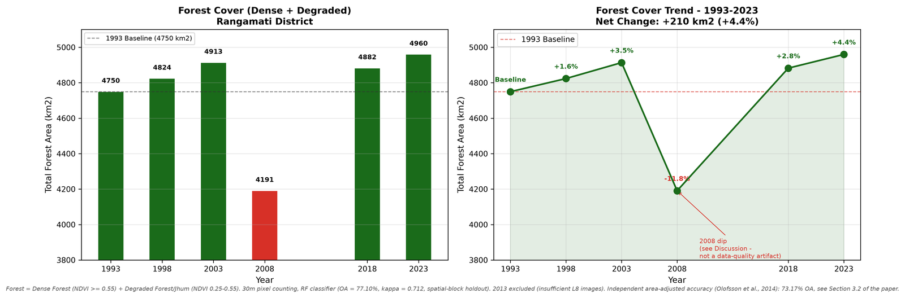
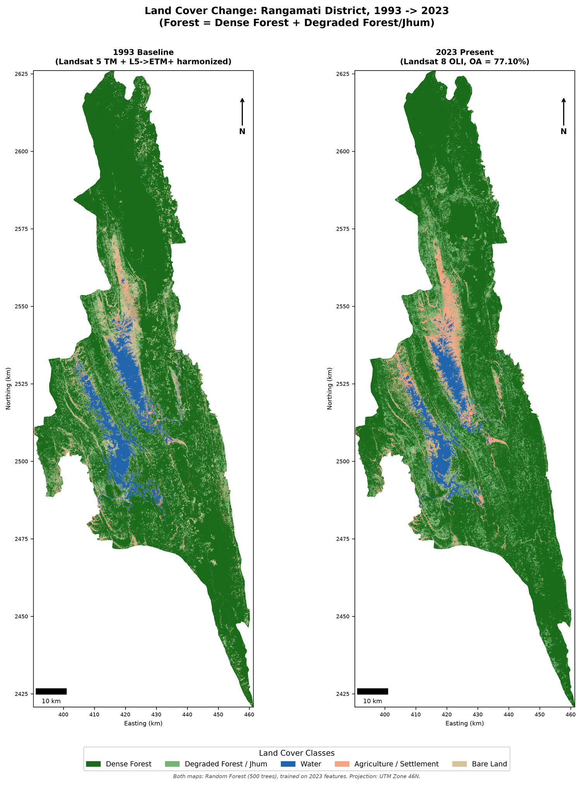
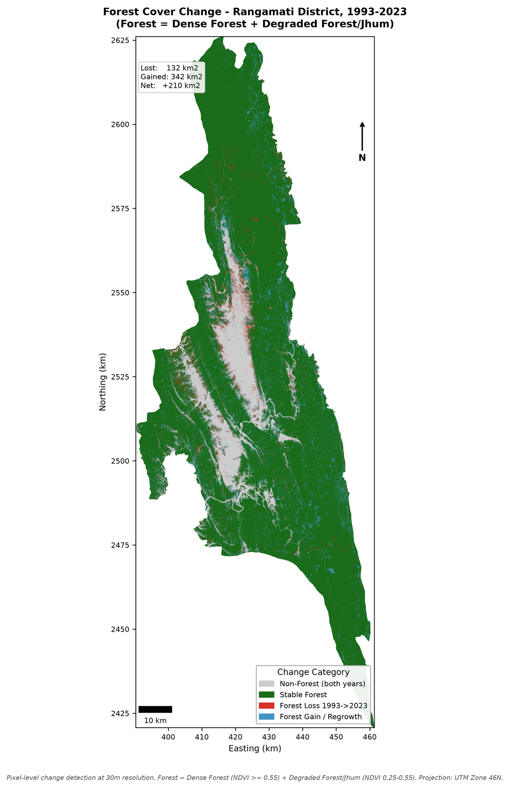

Multi-Decadal Land-Cover Mapping of the Chittagong Hill Tracts Using Machine Learning and Spatial Validation
Originated as B.Sc. thesis (2024, graded A+), then independently extended in 2026 into a full conference paper without institutional funding or supervision.
- Research question
- Has forest coverage in the Chittagong Hill Tracts changed over three decades (1993–2023)?
- Method
- Machine-learning classification of six Landsat epochs, comparing Support Vector Machine (78.04%), Random Forest (77.10%), and CART (72.90%) under spatially-blocked holdout validation — a stricter design than a random split, chosen to avoid inflating accuracy through spatial autocorrelation. Benchmarked against the Hansen Global Forest Change dataset. Full pipeline built with free, open-source tools (Google Earth Engine, Python, QGIS).
- Key finding
- Combined forest area increased 4.4% (+20,693 ha) between 1993 and 2023 — but Dense Forest specifically declined by 8,235 ha, pointing to a shift in forest composition rather than simple loss or gain.
- Validation
- Area-adjusted 2023 classification accuracy of 73.17% (95% CI: 64.34–82.00%), plus a forest-definition sensitivity analysis to test how much the result depends on a single NDVI threshold. Full code and data pipeline released publicly for reproducibility.


